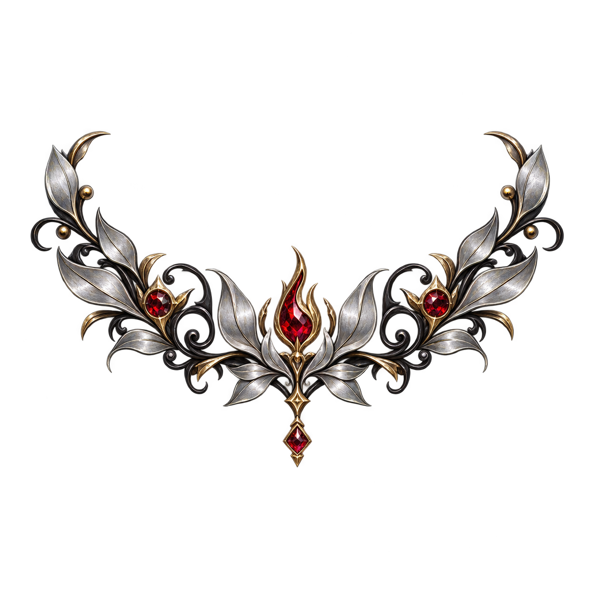

<!doctype html><html lang="ja"><meta charset="utf-8"><title>アイアンメイデン 神器の木 試作</title><style>
*{box-sizing:border-box}body{margin:0;background:#0a101a;color:#eee7d6;font-family:"Yu Gothic",sans-serif}main{max-width:1900px;margin:auto;padding:28px}h1{font-size:27px;margin:0 0 8px}p{color:#b5bfcc;margin:8px 0 24px}.panels{display:grid;grid-template-columns:1fr 1fr;gap:22px}section{border:1px solid #776948;border-radius:12px;background:radial-gradient(ellipse at center,#29313e,#101822 80%);overflow:hidden}h2{font-size:19px;margin:0;padding:16px 24px;border-bottom:1px solid #514b3e;color:#ddc99c}.tree{position:relative;width:100%;aspect-ratio:1000/666;--bark-dark:#24262e;--bark-light:#a1a5ad;--vein:#d5d5d9;--node:#80283b}.tree>svg{position:absolute;inset:0;width:100%;height:100%}.ornament{position:absolute;height:auto;pointer-events:none}.nodes{z-index:2}footer{display:flex;gap:18px;align-items:center;margin-top:24px}button{background:#263445;color:#eee7d6;border:1px solid #b29a65;border-radius:6px;padding:10px 22px;font-size:16px;cursor:pointer}.hide-nodes .nodes{display:none}small{color:#aab5c3}@media(max-width:900px){.panels{grid-template-columns:1fr}}
</style><main><h1>アイアンメイデン — 神器の木の試作</h1><p>銀と黒の木に、赤い宝石と銀の葉の装飾を重ねています。</p><div class="panels"><section><h2>共通の木・配色のみ</h2><div class="tree"><svg xmlns="http://www.w3.org/2000/svg" viewBox="0 0 1000 666"><defs><linearGradient id="bark" x1="0" y1="0" x2="1" y2="0"><stop stop-color="var(--bark-dark,#26272d)"/><stop offset=".5" stop-color="var(--bark-light,#92969f)"/><stop offset="1" stop-color="var(--bark-dark,#26272d)"/></linearGradient></defs><g fill="none" stroke-linecap="round" stroke-linejoin="round"><path d="M500 570 C450 615 370 635 270 640 M500 570 C550 615 630 635 730 640" stroke="#11131b" stroke-width="27"/><path d="M500 570 C450 615 370 635 270 640 M500 570 C550 615 630 635 730 640" stroke="url(#bark)" stroke-width="22"/><path d="M500 570 C450 615 370 635 270 640 M500 570 C550 615 630 635 730 640" stroke="var(--vein,#b8b9bd)" stroke-opacity=".45" stroke-width="2"/><path d="M500 580 C475 515 520 470 500 387 C480 335 520 300 500 287 C480 242 510 220 500 187 C486 155 500 110 500 87" stroke="#11131b" stroke-width="45"/><path d="M500 580 C475 515 520 470 500 387 C480 335 520 300 500 287 C480 242 510 220 500 187 C486 155 500 110 500 87" stroke="url(#bark)" stroke-width="40"/><path d="M500 580 C475 515 520 470 500 387 C480 335 520 300 500 287 C480 242 510 220 500 187 C486 155 500 110 500 87" stroke="var(--vein,#b8b9bd)" stroke-opacity=".45" stroke-width="2"/><path d="M500 566 C490 465 420 415 360 347 C330 308 305 280 275 240 C235 212 210 194 185 167 C150 141 125 125 100 100" stroke="#11131b" stroke-width="35"/><path d="M500 566 C490 465 420 415 360 347 C330 308 305 280 275 240 C235 212 210 194 185 167 C150 141 125 125 100 100" stroke="url(#bark)" stroke-width="30"/><path d="M500 566 C490 465 420 415 360 347 C330 308 305 280 275 240 C235 212 210 194 185 167 C150 141 125 125 100 100" stroke="var(--vein,#b8b9bd)" stroke-opacity=".45" stroke-width="2"/><path d="M500 566 C510 465 580 415 640 347 C670 308 695 280 725 240 C765 212 790 194 815 167 C850 141 875 125 900 100" stroke="#11131b" stroke-width="35"/><path d="M500 566 C510 465 580 415 640 347 C670 308 695 280 725 240 C765 212 790 194 815 167 C850 141 875 125 900 100" stroke="url(#bark)" stroke-width="30"/><path d="M500 566 C510 465 580 415 640 347 C670 308 695 280 725 240 C765 212 790 194 815 167 C850 141 875 125 900 100" stroke="var(--vein,#b8b9bd)" stroke-opacity=".45" stroke-width="2"/><path d="M285 635 C335 600 390 610 450 590 M715 635 C665 600 610 610 550 590" stroke="#11131b" stroke-width="15"/><path d="M285 635 C335 600 390 610 450 590 M715 635 C665 600 610 610 550 590" stroke="url(#bark)" stroke-width="10"/><path d="M285 635 C335 600 390 610 450 590 M715 635 C665 600 610 610 550 590" stroke="var(--vein,#b8b9bd)" stroke-opacity=".45" stroke-width="2"/><path d="M360 347 Q295 355 255 310 M640 347 Q705 355 745 310" stroke="#11131b" stroke-width="15"/><path d="M360 347 Q295 355 255 310 M640 347 Q705 355 745 310" stroke="url(#bark)" stroke-width="10"/><path d="M360 347 Q295 355 255 310 M640 347 Q705 355 745 310" stroke="var(--vein,#b8b9bd)" stroke-opacity=".45" stroke-width="2"/><path d="M275 240 Q225 255 202 220 M725 240 Q775 255 798 220" stroke="#11131b" stroke-width="13"/><path d="M275 240 Q225 255 202 220 M725 240 Q775 255 798 220" stroke="url(#bark)" stroke-width="8"/><path d="M275 240 Q225 255 202 220 M725 240 Q775 255 798 220" stroke="var(--vein,#b8b9bd)" stroke-opacity=".45" stroke-width="2"/><path d="M185 167 Q160 180 135 165 M815 167 Q840 180 865 165" stroke="#11131b" stroke-width="11"/><path d="M185 167 Q160 180 135 165 M815 167 Q840 180 865 165" stroke="url(#bark)" stroke-width="6"/><path d="M185 167 Q160 180 135 165 M815 167 Q840 180 865 165" stroke="var(--vein,#b8b9bd)" stroke-opacity=".45" stroke-width="2"/></g></svg><svg class="nodes" viewBox="0 0 1000 666"><g transform="translate(500.0,566.1)"><circle r="29" fill="#131e2a" stroke="#c9b57d" stroke-width="3"/><circle r="21" fill="var(--node,#8f2437)" stroke="#e8d7aa" stroke-width="1"/><text y="5" text-anchor="middle" fill="#fff5df" font-size="14" font-family="sans-serif">根</text></g><g transform="translate(360.0,346.32)"><circle r="29" fill="#131e2a" stroke="#c9b57d" stroke-width="3"/><circle r="21" fill="var(--node,#8f2437)" stroke="#e8d7aa" stroke-width="1"/><text y="5" text-anchor="middle" fill="#fff5df" font-size="14" font-family="sans-serif">攻撃Ⅰ</text></g><g transform="translate(500.0,386.28)"><circle r="29" fill="#131e2a" stroke="#c9b57d" stroke-width="3"/><circle r="21" fill="var(--node,#8f2437)" stroke="#e8d7aa" stroke-width="1"/><text y="5" text-anchor="middle" fill="#fff5df" font-size="14" font-family="sans-serif">守護Ⅰ</text></g><g transform="translate(640.0,346.32)"><circle r="29" fill="#131e2a" stroke="#c9b57d" stroke-width="3"/><circle r="21" fill="var(--node,#8f2437)" stroke="#e8d7aa" stroke-width="1"/><text y="5" text-anchor="middle" fill="#fff5df" font-size="14" font-family="sans-serif">技巧Ⅰ</text></g><g transform="translate(275.0,239.76)"><circle r="29" fill="#131e2a" stroke="#c9b57d" stroke-width="3"/><circle r="21" fill="var(--node,#8f2437)" stroke="#e8d7aa" stroke-width="1"/><text y="5" text-anchor="middle" fill="#fff5df" font-size="14" font-family="sans-serif">攻撃Ⅱ</text></g><g transform="translate(500.0,286.38)"><circle r="29" fill="#131e2a" stroke="#c9b57d" stroke-width="3"/><circle r="21" fill="var(--node,#8f2437)" stroke="#e8d7aa" stroke-width="1"/><text y="5" text-anchor="middle" fill="#fff5df" font-size="14" font-family="sans-serif">守護Ⅱ</text></g><g transform="translate(725.0,239.76)"><circle r="29" fill="#131e2a" stroke="#c9b57d" stroke-width="3"/><circle r="21" fill="var(--node,#8f2437)" stroke="#e8d7aa" stroke-width="1"/><text y="5" text-anchor="middle" fill="#fff5df" font-size="14" font-family="sans-serif">技巧Ⅱ</text></g><g transform="translate(185.0,166.5)"><circle r="29" fill="#131e2a" stroke="#c9b57d" stroke-width="3"/><circle r="21" fill="var(--node,#8f2437)" stroke="#e8d7aa" stroke-width="1"/><text y="5" text-anchor="middle" fill="#fff5df" font-size="14" font-family="sans-serif">攻撃Ⅲ</text></g><g transform="translate(500.0,186.48000000000002)"><circle r="29" fill="#131e2a" stroke="#c9b57d" stroke-width="3"/><circle r="21" fill="var(--node,#8f2437)" stroke="#e8d7aa" stroke-width="1"/><text y="5" text-anchor="middle" fill="#fff5df" font-size="14" font-family="sans-serif">守護Ⅲ</text></g><g transform="translate(815.0,166.5)"><circle r="29" fill="#131e2a" stroke="#c9b57d" stroke-width="3"/><circle r="21" fill="var(--node,#8f2437)" stroke="#e8d7aa" stroke-width="1"/><text y="5" text-anchor="middle" fill="#fff5df" font-size="14" font-family="sans-serif">技巧Ⅲ</text></g><g transform="translate(100.0,99.89999999999999)"><circle r="29" fill="#131e2a" stroke="#c9b57d" stroke-width="3"/><circle r="21" fill="var(--node,#8f2437)" stroke="#e8d7aa" stroke-width="1"/><text y="5" text-anchor="middle" fill="#fff5df" font-size="14" font-family="sans-serif">攻撃Ⅳ</text></g><g transform="translate(500.0,86.58)"><circle r="29" fill="#131e2a" stroke="#c9b57d" stroke-width="3"/><circle r="21" fill="var(--node,#8f2437)" stroke="#e8d7aa" stroke-width="1"/><text y="5" text-anchor="middle" fill="#fff5df" font-size="14" font-family="sans-serif">守護Ⅳ</text></g><g transform="translate(900.0,99.89999999999999)"><circle r="29" fill="#131e2a" stroke="#c9b57d" stroke-width="3"/><circle r="21" fill="var(--node,#8f2437)" stroke="#e8d7aa" stroke-width="1"/><text y="5" text-anchor="middle" fill="#fff5df" font-size="14" font-family="sans-serif">技巧Ⅳ</text></g></svg></div></section><section><h2>専用装飾を重ねた状態</h2><div class="tree"><svg xmlns="http://www.w3.org/2000/svg" viewBox="0 0 1000 666"><defs><linearGradient id="bark" x1="0" y1="0" x2="1" y2="0"><stop stop-color="var(--bark-dark,#26272d)"/><stop offset=".5" stop-color="var(--bark-light,#92969f)"/><stop offset="1" stop-color="var(--bark-dark,#26272d)"/></linearGradient></defs><g fill="none" stroke-linecap="round" stroke-linejoin="round"><path d="M500 570 C450 615 370 635 270 640 M500 570 C550 615 630 635 730 640" stroke="#11131b" stroke-width="27"/><path d="M500 570 C450 615 370 635 270 640 M500 570 C550 615 630 635 730 640" stroke="url(#bark)" stroke-width="22"/><path d="M500 570 C450 615 370 635 270 640 M500 570 C550 615 630 635 730 640" stroke="var(--vein,#b8b9bd)" stroke-opacity=".45" stroke-width="2"/><path d="M500 580 C475 515 520 470 500 387 C480 335 520 300 500 287 C480 242 510 220 500 187 C486 155 500 110 500 87" stroke="#11131b" stroke-width="45"/><path d="M500 580 C475 515 520 470 500 387 C480 335 520 300 500 287 C480 242 510 220 500 187 C486 155 500 110 500 87" stroke="url(#bark)" stroke-width="40"/><path d="M500 580 C475 515 520 470 500 387 C480 335 520 300 500 287 C480 242 510 220 500 187 C486 155 500 110 500 87" stroke="var(--vein,#b8b9bd)" stroke-opacity=".45" stroke-width="2"/><path d="M500 566 C490 465 420 415 360 347 C330 308 305 280 275 240 C235 212 210 194 185 167 C150 141 125 125 100 100" stroke="#11131b" stroke-width="35"/><path d="M500 566 C490 465 420 415 360 347 C330 308 305 280 275 240 C235 212 210 194 185 167 C150 141 125 125 100 100" stroke="url(#bark)" stroke-width="30"/><path d="M500 566 C490 465 420 415 360 347 C330 308 305 280 275 240 C235 212 210 194 185 167 C150 141 125 125 100 100" stroke="var(--vein,#b8b9bd)" stroke-opacity=".45" stroke-width="2"/><path d="M500 566 C510 465 580 415 640 347 C670 308 695 280 725 240 C765 212 790 194 815 167 C850 141 875 125 900 100" stroke="#11131b" stroke-width="35"/><path d="M500 566 C510 465 580 415 640 347 C670 308 695 280 725 240 C765 212 790 194 815 167 C850 141 875 125 900 100" stroke="url(#bark)" stroke-width="30"/><path d="M500 566 C510 465 580 415 640 347 C670 308 695 280 725 240 C765 212 790 194 815 167 C850 141 875 125 900 100" stroke="var(--vein,#b8b9bd)" stroke-opacity=".45" stroke-width="2"/><path d="M285 635 C335 600 390 610 450 590 M715 635 C665 600 610 610 550 590" stroke="#11131b" stroke-width="15"/><path d="M285 635 C335 600 390 610 450 590 M715 635 C665 600 610 610 550 590" stroke="url(#bark)" stroke-width="10"/><path d="M285 635 C335 600 390 610 450 590 M715 635 C665 600 610 610 550 590" stroke="var(--vein,#b8b9bd)" stroke-opacity=".45" stroke-width="2"/><path d="M360 347 Q295 355 255 310 M640 347 Q705 355 745 310" stroke="#11131b" stroke-width="15"/><path d="M360 347 Q295 355 255 310 M640 347 Q705 355 745 310" stroke="url(#bark)" stroke-width="10"/><path d="M360 347 Q295 355 255 310 M640 347 Q705 355 745 310" stroke="var(--vein,#b8b9bd)" stroke-opacity=".45" stroke-width="2"/><path d="M275 240 Q225 255 202 220 M725 240 Q775 255 798 220" stroke="#11131b" stroke-width="13"/><path d="M275 240 Q225 255 202 220 M725 240 Q775 255 798 220" stroke="url(#bark)" stroke-width="8"/><path d="M275 240 Q225 255 202 220 M725 240 Q775 255 798 220" stroke="var(--vein,#b8b9bd)" stroke-opacity=".45" stroke-width="2"/><path d="M185 167 Q160 180 135 165 M815 167 Q840 180 865 165" stroke="#11131b" stroke-width="11"/><path d="M185 167 Q160 180 135 165 M815 167 Q840 180 865 165" stroke="url(#bark)" stroke-width="6"/><path d="M185 167 Q160 180 135 165 M815 167 Q840 180 865 165" stroke="var(--vein,#b8b9bd)" stroke-opacity=".45" stroke-width="2"/></g></svg><svg class="nodes" viewBox="0 0 1000 666"><g transform="translate(500.0,566.1)"><circle r="29" fill="#131e2a" stroke="#c9b57d" stroke-width="3"/><circle r="21" fill="var(--node,#8f2437)" stroke="#e8d7aa" stroke-width="1"/><text y="5" text-anchor="middle" fill="#fff5df" font-size="14" font-family="sans-serif">根</text></g><g transform="translate(360.0,346.32)"><circle r="29" fill="#131e2a" stroke="#c9b57d" stroke-width="3"/><circle r="21" fill="var(--node,#8f2437)" stroke="#e8d7aa" stroke-width="1"/><text y="5" text-anchor="middle" fill="#fff5df" font-size="14" font-family="sans-serif">攻撃Ⅰ</text></g><g transform="translate(500.0,386.28)"><circle r="29" fill="#131e2a" stroke="#c9b57d" stroke-width="3"/><circle r="21" fill="var(--node,#8f2437)" stroke="#e8d7aa" stroke-width="1"/><text y="5" text-anchor="middle" fill="#fff5df" font-size="14" font-family="sans-serif">守護Ⅰ</text></g><g transform="translate(640.0,346.32)"><circle r="29" fill="#131e2a" stroke="#c9b57d" stroke-width="3"/><circle r="21" fill="var(--node,#8f2437)" stroke="#e8d7aa" stroke-width="1"/><text y="5" text-anchor="middle" fill="#fff5df" font-size="14" font-family="sans-serif">技巧Ⅰ</text></g><g transform="translate(275.0,239.76)"><circle r="29" fill="#131e2a" stroke="#c9b57d" stroke-width="3"/><circle r="21" fill="var(--node,#8f2437)" stroke="#e8d7aa" stroke-width="1"/><text y="5" text-anchor="middle" fill="#fff5df" font-size="14" font-family="sans-serif">攻撃Ⅱ</text></g><g transform="translate(500.0,286.38)"><circle r="29" fill="#131e2a" stroke="#c9b57d" stroke-width="3"/><circle r="21" fill="var(--node,#8f2437)" stroke="#e8d7aa" stroke-width="1"/><text y="5" text-anchor="middle" fill="#fff5df" font-size="14" font-family="sans-serif">守護Ⅱ</text></g><g transform="translate(725.0,239.76)"><circle r="29" fill="#131e2a" stroke="#c9b57d" stroke-width="3"/><circle r="21" fill="var(--node,#8f2437)" stroke="#e8d7aa" stroke-width="1"/><text y="5" text-anchor="middle" fill="#fff5df" font-size="14" font-family="sans-serif">技巧Ⅱ</text></g><g transform="translate(185.0,166.5)"><circle r="29" fill="#131e2a" stroke="#c9b57d" stroke-width="3"/><circle r="21" fill="var(--node,#8f2437)" stroke="#e8d7aa" stroke-width="1"/><text y="5" text-anchor="middle" fill="#fff5df" font-size="14" font-family="sans-serif">攻撃Ⅲ</text></g><g transform="translate(500.0,186.48000000000002)"><circle r="29" fill="#131e2a" stroke="#c9b57d" stroke-width="3"/><circle r="21" fill="var(--node,#8f2437)" stroke="#e8d7aa" stroke-width="1"/><text y="5" text-anchor="middle" fill="#fff5df" font-size="14" font-family="sans-serif">守護Ⅲ</text></g><g transform="translate(815.0,166.5)"><circle r="29" fill="#131e2a" stroke="#c9b57d" stroke-width="3"/><circle r="21" fill="var(--node,#8f2437)" stroke="#e8d7aa" stroke-width="1"/><text y="5" text-anchor="middle" fill="#fff5df" font-size="14" font-family="sans-serif">技巧Ⅲ</text></g><g transform="translate(100.0,99.89999999999999)"><circle r="29" fill="#131e2a" stroke="#c9b57d" stroke-width="3"/><circle r="21" fill="var(--node,#8f2437)" stroke="#e8d7aa" stroke-width="1"/><text y="5" text-anchor="middle" fill="#fff5df" font-size="14" font-family="sans-serif">攻撃Ⅳ</text></g><g transform="translate(500.0,86.58)"><circle r="29" fill="#131e2a" stroke="#c9b57d" stroke-width="3"/><circle r="21" fill="var(--node,#8f2437)" stroke="#e8d7aa" stroke-width="1"/><text y="5" text-anchor="middle" fill="#fff5df" font-size="14" font-family="sans-serif">守護Ⅳ</text></g><g transform="translate(900.0,99.89999999999999)"><circle r="29" fill="#131e2a" stroke="#c9b57d" stroke-width="3"/><circle r="21" fill="var(--node,#8f2437)" stroke="#e8d7aa" stroke-width="1"/><text y="5" text-anchor="middle" fill="#fff5df" font-size="14" font-family="sans-serif">技巧Ⅳ</text></g></svg></div></section></div><footer><button onclick="document.body.classList.toggle('hide-nodes')">ノード表示の切替</button><small>構造と13ノードの位置は共通。装飾だけを別画像で追加した試作です。</small></footer></main></html>